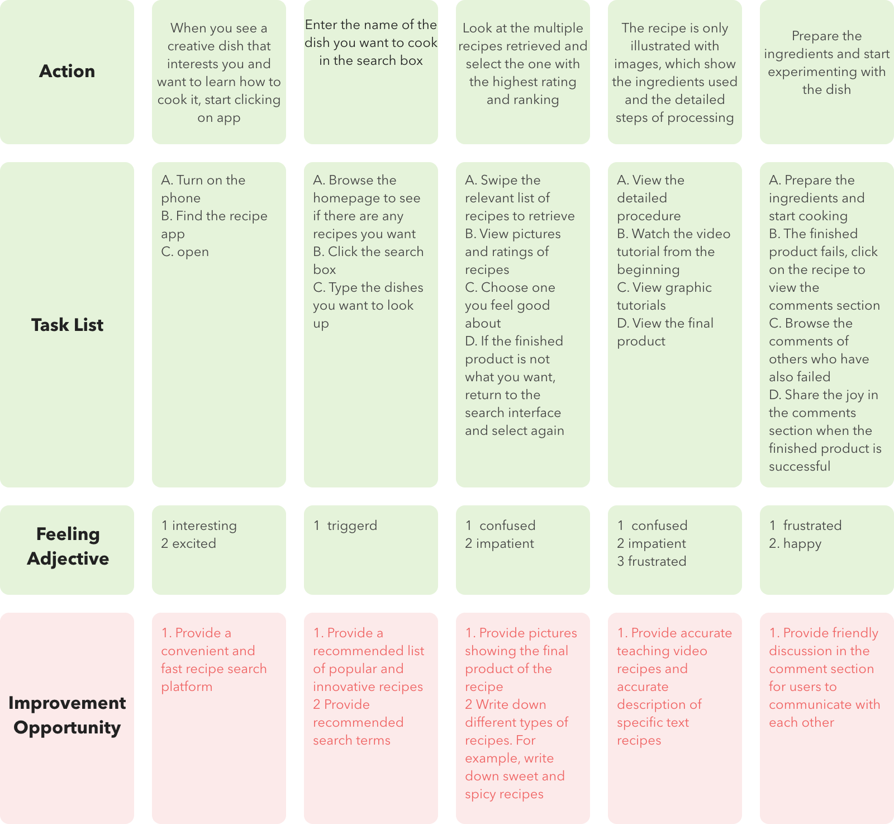
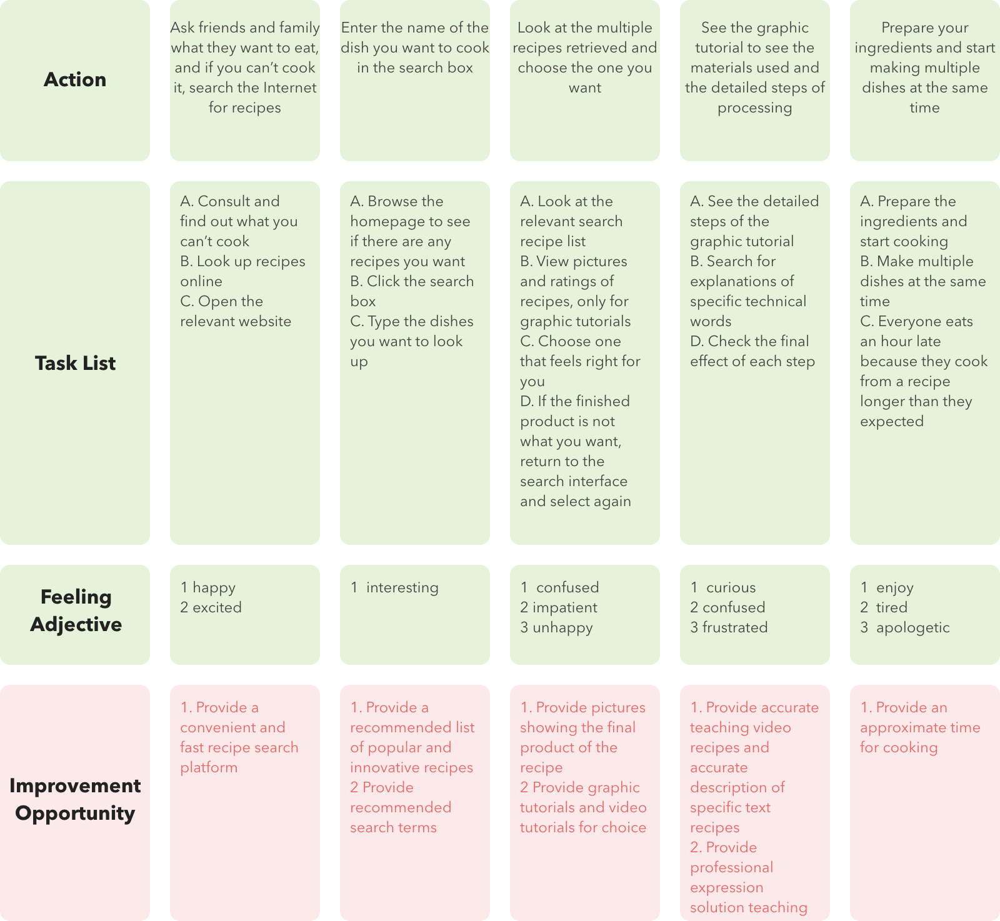
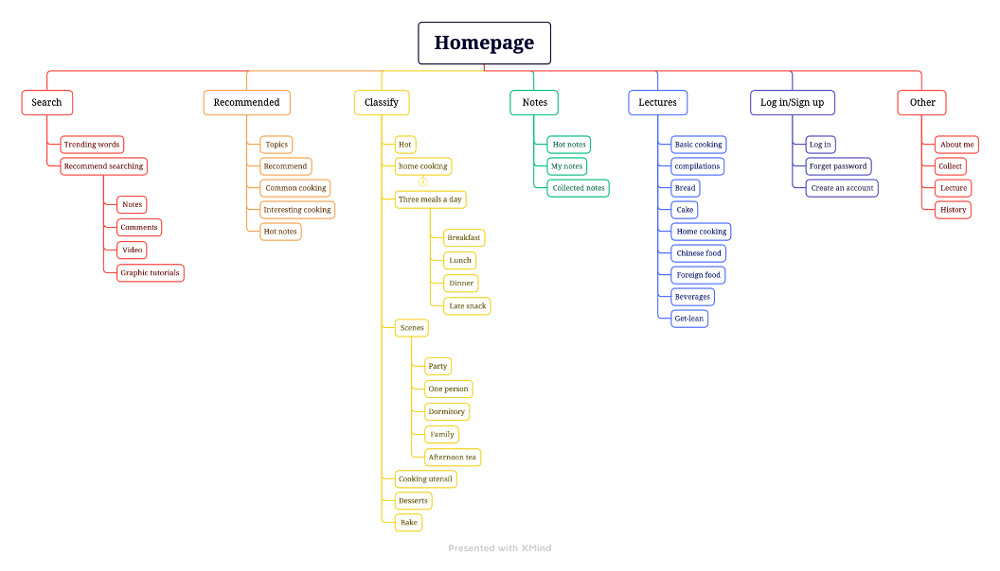
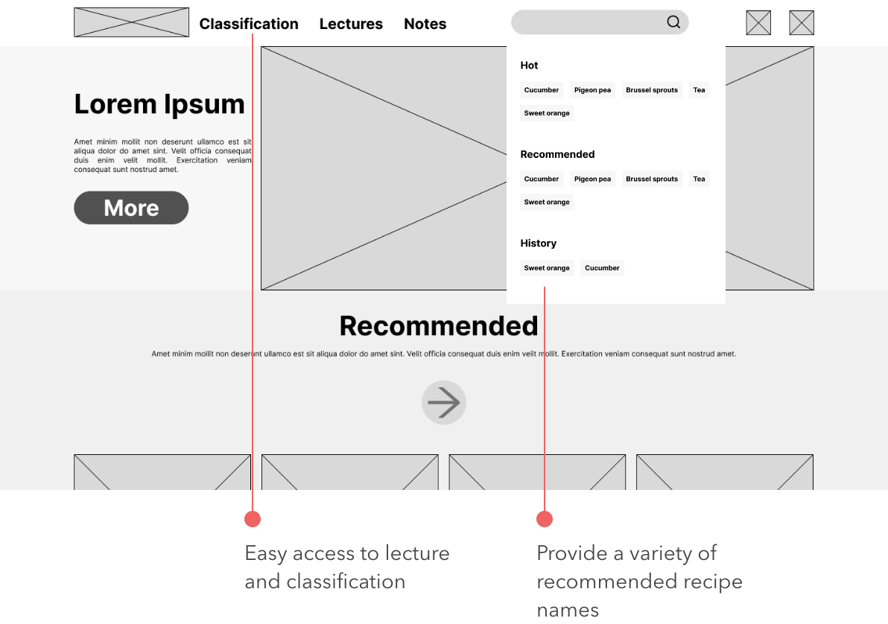
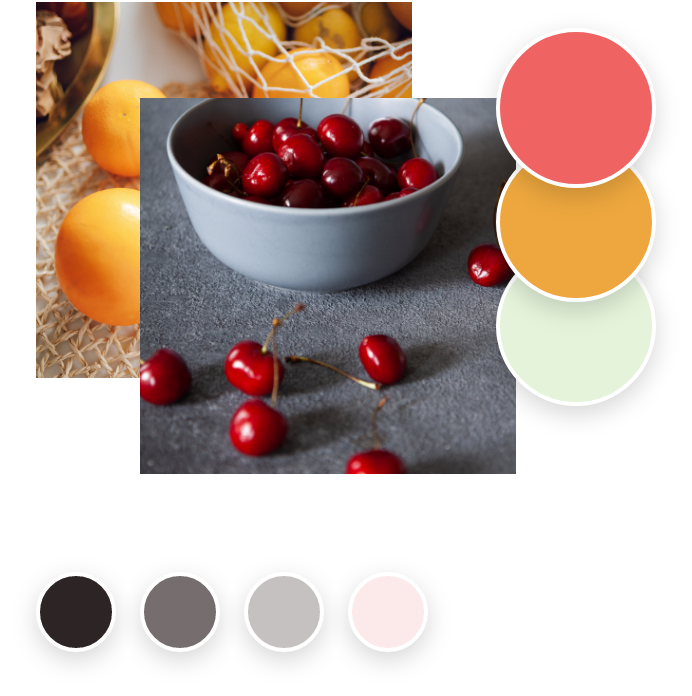
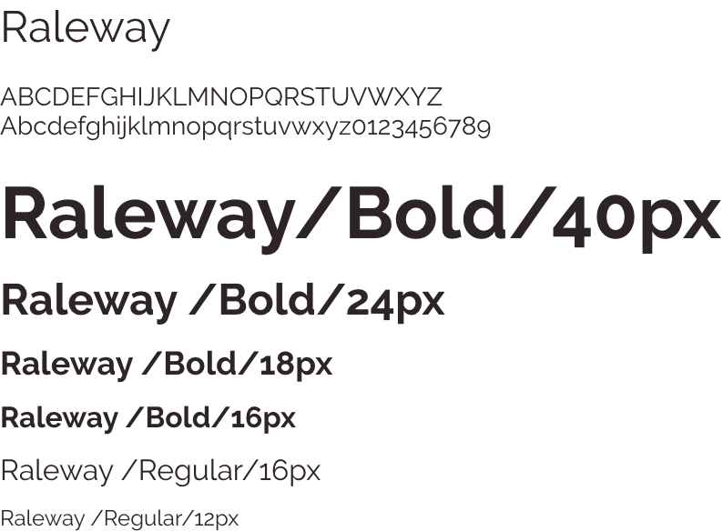
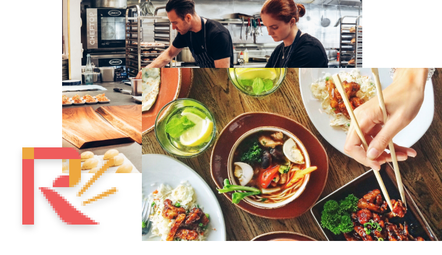
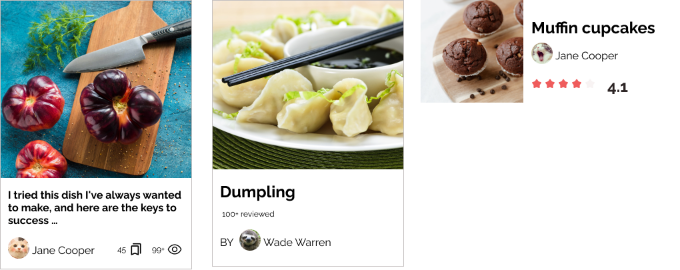

Project Overview
The Project
Recipe website is a scalable website for finding and viewing cooking tutorials. It focuses on 20~50 years old people who want to have easy way to find and use the recipes. Recipe website provides the time and complexity of a recipe and decomposition steps and instructions for users.
The Problem
The most recipe websites don’t have clear amount about the ingredients are used in the food, and some common websites don’t have the explanation of some professional operation. Not all websites remind users of the approximate time it takes to cook.
The Goal
Recipe website hopes to provide users with a recipe tutorial platform that makes it easy to learn and estimate the duration and difficulty of cooking, as well as a community where users can communicate and learn from each other.
Responsibilities
Conducting interviews, paper and digital wireframing, low and high-fidelity prototyping, conducting usability studies, accounting for accessibility, iterating on designs and responsive design.
User Research
I conducted user interviews, which I then turned into empathy maps to better understand the target user and their needs. I discovered that some target users use the cooking platform as a platform to communicate and increase their confidence in cooking. Some users prefer to have precise time instructions and detailed steps explained. Many users use cooking as a part of social interaction.
pain points
- Common recipe sites offer professional recipes that are difficult for beginners to learn.
- Common recipe sites do not provide an estimate of how long it takes to complete a recipe or how complex it is.
- Common recipe sites do not provide a convenient way for users who do not have the convenience of using text search.
Persona
problem statement
As a young woman who lives alone and works outside the home, Li hopes that the online platform can provide simple and easy to learn zero-based cooking courses and comment platform, so that she can learn to cook and exchange results with each other.
problem statement
As a freelance worker who likes to bond with family and friends through food, Chong hopes there will be online recipe sites that provide detailed details of how long it takes to prepare the dishes and explain the results of the cooking stages, so he can time the different dishes properly and avoid people being late for dinner.
User Journey Map
User : Li
User : Chong
Competitive audit

I looked at several potential competitive companies, three for direct competition and one for indirect competition. The majority of the features between competitors were very similar. There are still many unique highlights among competing products.
- Cookbook related social platform
- Note - based short video interactive communication community
- Distributed video - based dummies for beginners
sitemap
Difficulty with website navigation was a primary pain point for users, so I used that knowledge to create a sitemap. My goal here was to make strategic information architecture decisions that would improve overall website navigation. The structure I chose was designed to make things simple and easy.
low-fi PROTOTYPE
Paper Wireframe
Next, I sketched out paper wireframes for each screen in my app, keeping the user pain points about navigation, browsing, and checkout flow in mind. The home screen paper wireframe variations to the right focus on optimizing the browsing experience for users.
Digital Wireframe

Moving from paper to digital wireframes made it easy to understand how the redesign could help address user pain points and improve the user experience. Prioritizing useful button locations and visual element placement on the home page was a key part of my strategy.
Low-fidelity Prototype

To create a low-fidelity prototype, I connected all of the screens involved in the primary user flow of adding an item to the cart and checking out.
At this point, I had received feedback on my designs from some users. I made sure to listen to their feedback, and I implemented several suggestions in places that addressed user pain points.
View the low fidelity prototype here.Usability study
Study Type :Moderated usability study
Participants :5 participants
Length :Above 10 minutes
1
Accessibility
Users who do not have the convenience of typing search need more convenient retrieval channels
2
Collection
Users want the ability to bookmark recipes
3
Checkout list
Users expect recipes to start with the amount of seasoning and time needed, as well as the complexity of the recipe
Mockup

Hi-fi prototype
Color
font
logo
The logo of the website is built on the image of chopsticks and the action of cooking. The R letter is deformed and the chopstick image similar to the speed line in the cartoon is added to form the logo of the website。
Components
Hi-fi prototype
visual design
ACCESSIBILITY CONSIDERATIONS
1
Audio search
A means of voice retrieval provided to users who do not have the convenience of keyboard text retrieval
2
Landmark
I used landmarks to help users navigate the site, including users who rely on assistive technologies
3
Hierarchy
I used headings with different sized text for clear visual hierarchy
WHAT I LEARNED
- Keeping Insights in mind when designing, I forgot to consider the case for inconvenient keyboard input during the initial design;
- Consider how the different navigations are related to each other at design time, and the two functions sometimes affect each other.
next step
- Consider the design of the notes, combined with the recipe tutorial, to provide the user with more initiative in learning